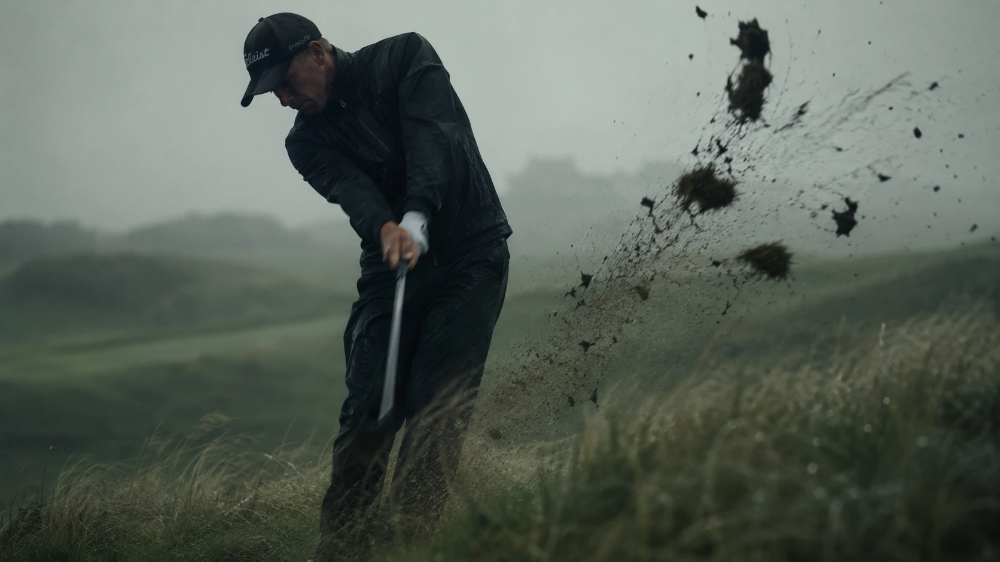

Raw golf is not a swing system. Nobody is selling you a fix. It is a way of practising and playing that fits people with jobs, kids, and about four hours a week to give the game. This guide covers what raw golf means, how to practise it, how to play without pressure, and how to track your game honestly. No hacks. No magic drills.

You scroll past another perfect swing video. Guy in white trousers, sunset behind him, ball flying dead straight. Then you think about your Tuesday night at the range, where you shanked three wedges and left angry. That gap is why raw golf exists.
Raw golf is not a swing system. Nobody is selling you a fix. It is a way of practising and playing that fits people with jobs, kids, and about four hours a week to give the game. This guide covers what raw golf means, how to practise it, how to play without pressure, and how to track your game honestly. No hacks. No magic drills.
What Is Raw Golf?
Raw golf means playing honest golf, at your real level, with your real life.
It has three parts. You accept where your game actually sits today, not where you tell your mates it sits. You stop copying tour swings built on thirty hours of practice a week you will never have. And you talk about your game truthfully, starting with yourself.
That is the whole thing. No secret method. Just a mindset that says enjoy the game, improve a bit each month, and stop performing for people who are not watching.
Who Is It For?
Raw golf fits you if this sounds familiar:
- You play once a week when life allows.
- You break 100 sometimes. You break 90 rarely.
- You have spent money on lessons and clubs and still hit fat wedges.
- You are tired of pros telling you to hit stingers.
- You want your Saturday round to feel fun again.
If you play twice a week with a coach on speed dial, raw golf still works. You just need it less.
Why Fake Instagram Golf Hurts Your Game
Instagram golf lies. Not on purpose. The camera keeps the one shot that flew and deletes the seven that did not.
Watch enough of it and your head starts playing tricks. You think your bad shots are unusual. They are not. You add tension trying not to look silly. You skip a round because you do not feel ready. Then you skip the range because you feel behind. Then a month goes by and your clubs sit in the boot.
Here is the boring truth. Most rounds are ugly. Most swings are compensations. Even good players hit two or three shots a round they want back. Accept that and you free up the space in your head to actually play.
How to Practise Raw Golf at the Range
Most range sessions waste your money. You pull driver, hit forty balls in a row, lose your rhythm by ball fifteen, and drive home confused. Honest golf practice looks different.
Warm Up Properly
Ten minutes. Not thirty seconds.
- Start with a wedge. Half swings. Ten balls to a target 30 to 50 yards out.
- Move to a 9 iron. Full swings. Ten balls.
- Only then pull anything longer.
Your body needs time. Your eyes need a target. Skip this and your first twenty balls become the warm up, except now you are grooving frustration.
Practise the Way You Play
You never hit nine 7 irons in a row on a course. Stop doing it on a mat.
Play a hole in your head instead. Hit driver. Then hit the club you would actually have left, based on where that drive really goes. Then a wedge. Change targets every shot. Take thirty seconds between swings, like you would on the course.
You will hit fewer balls. It will feel harder. Your scores will drop.
Track One Number
Forget launch monitors. Pick one number and count it honestly.
Fairways out of ten drivers. Wedges inside fifteen feet out of ten. Solid strikes out of ten irons. Choose one. Next week, beat it by one shot. That is the whole system.
How to Play a Round Without Pressure
The pressure you feel on the course is almost always your own. You brought it. So you can put it down.
Pick a Score You Have Actually Shot
If you break 100, stop chasing 90 today. Pick a number you have hit before, or nearly hit, and play to that. Chasing a career round every week guarantees three ugly holes early, and then your day is done.
Choose a Bail Out Club
Pick one club you trust. For most players that is a 6 or 7 iron. When a hole scares you, or your driver is spraying, hit the club you trust instead. You give up forty yards. You stay in the hole.
Pros do this constantly. They just do not talk about it.
Fix How You Talk to Yourself
After a bad shot you get about ten seconds before your brain writes the script for the next one. Use them.
Instead of "I always do that," try something flat and useful. "Missed left. Next shot." That is not positive thinking. It is refusing to let one bad swing cost you two more.
How to Track Your Game Without Faking It
Your phone is enough. You do not need a camera crew.
Film One Full Hole a Month
Not one swing in good light. One whole hole, tee to green. Then watch it back.
You will notice things memory deletes. Your routine took forty seconds on one hole and four on the next. You trudged to your ball after a bad drive. You never read that putt. Real golf improvement starts with what you actually did, not what you remember doing.
Share the Ugly Ones
If you post golf online, post a chunked chip. A shank. A putt left five feet short. Not every time. Just enough to stay honest.
Shot 94? Say 94. Name the two shots that killed you and the one that felt pure. That is the raw golf blog approach, and other normal golfers will thank you for it.
Keep a Two Line Log
After every round, open your notes app and write two lines.
- What worked.
- What did not.
Thirty seconds. After ten rounds you will see a pattern. After twenty you will know what to practise, and it usually will not be the driver.
What a Raw Golf Session Actually Looks Like
Here is a real 45 minute session you can copy this week.
- First 10 minutes: Warm up. Six wedges at 30 yards, six at 50, six full 9 irons. Target every ball.
- Next 15 minutes: Play three imaginary holes. Driver, honest approach club, wedge. New target every shot.
- Next 10 minutes: Count one number. Ten wedges from 100 yards. How many finish inside a putter length?
- Last 10 minutes: Putt from six to ten feet. That range decides your score. Twenty balls. Count the makes.
Write your two numbers down. Go home.
The Honest Limits
Golf is hard and nothing here changes that. You will still hit bad shots. You will still have rounds where nothing works and you want to snap a club over your knee.
Raw golf does not make you good fast. It makes you honest, and honest golfers improve because they know what to fix. Anyone promising quick fixes is selling something.
One Thing to Try This Week
Play one round without a scorecard.
Two rules. Do not write anything down, count on your fingers if you must. And pick your bail out club on the first tee, then actually use it when a hole gets scary.
One round like that and you will remember why you started playing. Some of that freedom follows you into your next scorecard round. Not all of it. Golf is still golf. But enough.
That is raw golf. Ugly, honest, and yours.